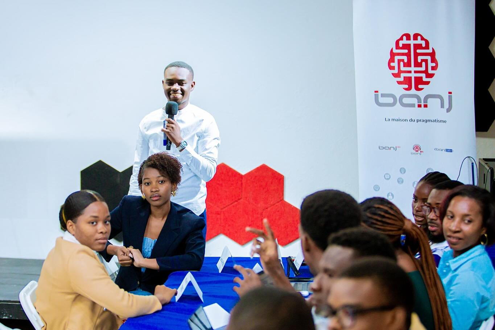
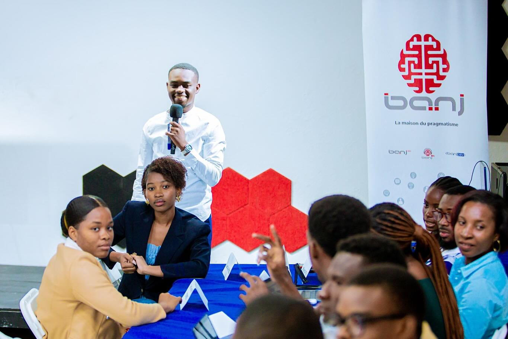

Des programmes
qui mettent les jeunes
au centre de l’action
Chaque projet est pensé comme un espace d’expérimentation, de formation et de transmission. De l’initiation à l’entrepreneuriat jusqu’à l’accompagnement long terme.
Les jeunes sont au cœur de nos programmes : forums, ateliers et projets médiatiques coordonnés ces dernières années.


 
